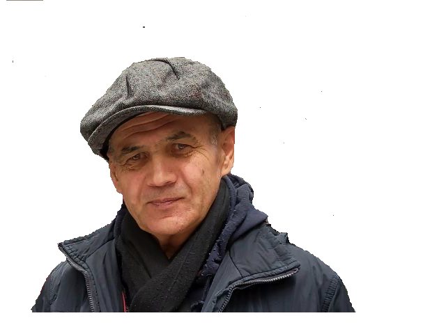

How to maintain health after 40
Tips from personal experience on staying fit and energized.
Exploring knowledge, health, systems and life through experience and reflection.

I share practical reflections on health, learning, discipline and scientific thinking. This website is a personal space where research meets real life.
Tips from personal experience on staying fit and energized.
Why consistent habits beat short-term motivation.
Approaches to mastering complex topics step by step.
Analytical notes on learning strategies. PDF
Reflections on maintaining energy and productivity. PDF
Notes on building frameworks for decision-making. PDF